CSS: Cascading Style Sheet
Definition:
Cascading Style Sheets (CSS) is a stylesheet language used to describe the presentation of
a document written in HTML or XML (including XML dialects such as SVG, MathML or XHTML).
CSS describes how elements should be rendered on screen, on paper, in speech, or on other media.
CSS is among the core languages of the open web and is standardized across Web browsers
according to W3C specifications. Previously, development of various parts of CSS
specification was done synchronously, which allowed versioning of the latest recommendations.
You might have heard about CSS1, CSS2.1, CSS3. However, CSS4 has never become an official version.
From CSS3, the scope of the specification increased significantly and the progress
on different CSS modules started to differ so much, that it became more effective
to develop and release recommendations separately per module. Instead of versioning
the CSS specification, W3C now periodically takes a snapshot of the latest stable state
of the CSS specification.
Source: ☛ MDN Web Docs
GETTING STARTED WITH CSS
A Brief Hisory of CSS:
The saga of CSS starts in 1994. Håkon Wium Lie works at CERN - the cradle of the
Web - and the Web is starting to be used as a platform for electronic publishing.
One crucial part of a publishing platform is missing, however: There is no way to
style documents. For example, there is no way to describe a newspaper-like layout
in a Web page. Having worked on personalized newspaper presentations at the MIT
Media Laboratory, Håkon saw the need for a style sheet language for the Web.
Style sheets in browsers were not an entirely new idea. The separation of document
structure from the document's layout had been a goal of HTML from its inception in
1990. Tim Berners-Lee wrote his NeXT browser/editor in such a way that he could
determine the style with a simple style sheet. However, he didn't publish the syntax
for the style sheets, considering it a matter for each browser to decide how to best
display pages to its users. In 1992, Pei Wei developed a browser called Viola, which
had its own style sheet language..
Source: ☛ w3.org
STARTING WITH SOME HTML
Our starting point is an HTML document. You can
copy the code from below if you want to work on your own computer. Save the code below as
index.html in a folder on your machine.
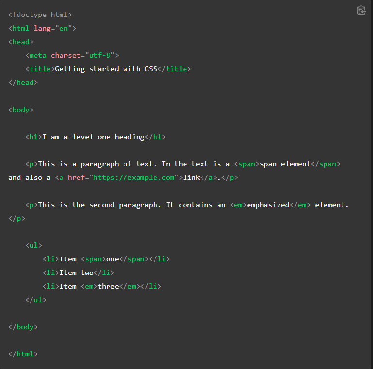
ADDING CSS TO OUR DOCUMENT
The very first thing we need to do is to tell the HTML document
that we have some CSS rules we want it to use. There are three different ways to apply CSS
to an HTML document that you'll commonly come across, however, for now, we will look at the
most usual and useful way of doing so — linking CSS from the head of your document.
Create a file in the same folder as your HTML document and save it as
styles.css.
The .css
extension shows that this is a CSS file.
To link styles.css
to index.html,
add the following line somewhere inside the
Source: ☛ MDN Web Docs
This <link> element tells the browser that we have a stylesheet, using the rel attribute, and the location of that stylesheet as the value of the href attribute. You can test that the CSS works by adding a rule to styles.css. Using your code editor, add the following to your CSS file:
Save your HTML and CSS files and reload the page in a web browser. The level
one heading at the top of the document should now be red. If that happens,
congratulations — you have successfully applied some CSS to an HTML document.
If that doesn't happen, carefully check that you've typed everything correctly.
You can continue to work in styles.css
locally, or you can use our interactive editor below to continue with this tutorial. The interactive editor acts as if the
CSS in the first panel is linked to the HTML document, just as we have with our document above.
STYLING HTML ELEMENTS
By making our heading red, we have already demonstrated that we can target and style an HTML element. We do this by targeting an element selector — this is a selector that directly matches an HTML element name. To target all paragraphs in the document, you would use the selector p. To turn all paragraphs green, you would use:
Source: ☛ MDN Web Docs
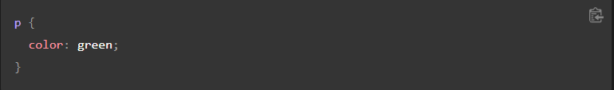You can target multiple selectors at the same time by separating the selectors with a comma. If you want all paragraphs and all list items to be green, your rule would look like this:
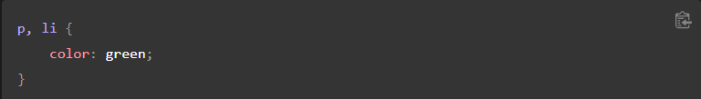Try this out in the interactive editor below (edit the code boxes) or in your local CSS document.
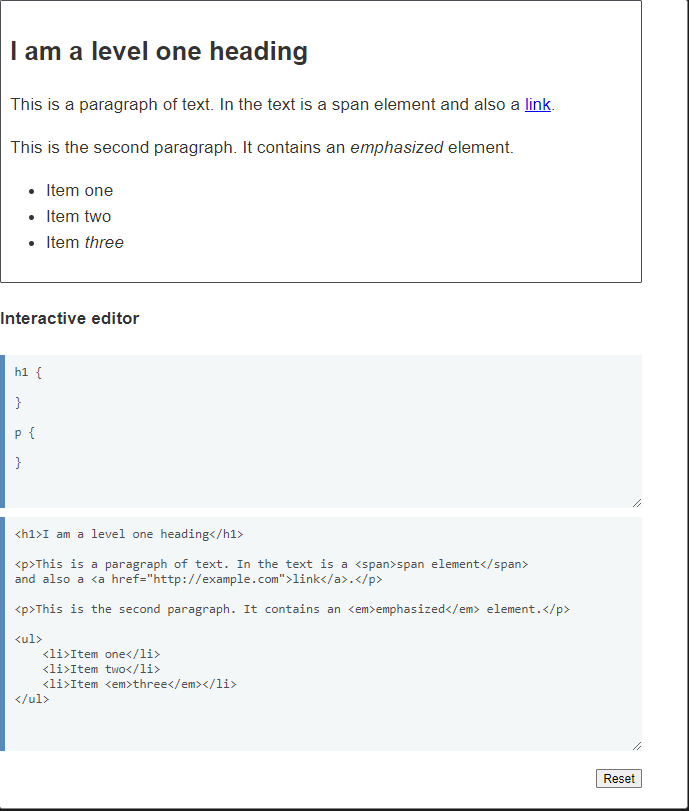
CHANGING THE DEFAULT BEHAVIOR OF ELEMENTS
When we look at a well-marked up HTML document, even something as simple as our example,
we can see how the browser is making the HTML readable by adding some default styling.
Headings are large and bold and our list has bullets. This happens because browsers have
internal stylesheets containing default styles, which they apply to all pages by default;
without them all of the text would run together in a clump and we would have to style everything
from scratch. All modern browsers display HTML content by default in pretty much the same way.
However, you will often want something other than the choice the browser has made.
This can be done by choosing the HTML element that you want to change and using a
CSS rule to change the way it looks. A good example is
<ul>,
an unordered list. It has list bullets. If you don't want those bullets, you can remove them like so:
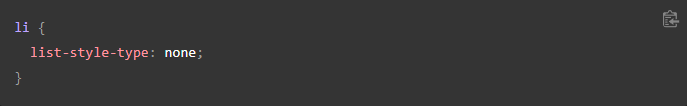
Source: ☛ MDN Web Docs
TRY ADDING THIS TO YOUR CSS NOW.
The list-style-type property is a good property to look at on MDN to see which values are supported. Take a
look at the page for list-style-type and you will find an interactive example at the top of the page to try
some different values in, then all allowable values are detailed further down the page.
Looking at that page you will discover that in addition to removing the list bullets, you can change them — try
changing them to square bullets by using a value of square.
ADDING A CLASS
So far, we have styled elements based on their HTML element names. This works as long as you want all of
the elements of that type in your document to look the same. Most of the time that isn't the case and so
you will need to find a way to select a subset of the elements without changing the others. The most common
way to do this is to add a class to your HTML element and target that class.
In your HTML document, add a class attribute to the second list item. Your list will now look like this:
Source: ☛ MDN Web Docs
In your CSS, you can target the class of special by creating a selector that starts with a full stop character. Add the following to your CSS file:
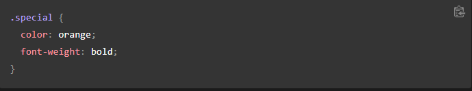
Save and refresh to see what the result is.
You can apply the class of special to any element on your page that you want to have the same look as this list item. For example, you might want the <span> in the paragraph to also be orange and bold. Try adding a class of special to it, then reload your page and see what happens.
Sometimes you will see rules with a selector that lists the HTML element selector along with the class:
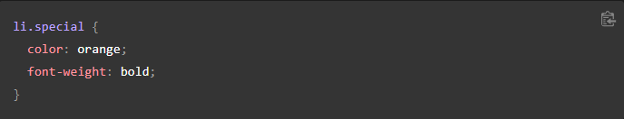This syntax means "target any li element that has a class of special". If you were to do this, then you would no longer be able to apply the class to a <span> or another element by adding the class to it; you would have to add that element to the list of selectors:
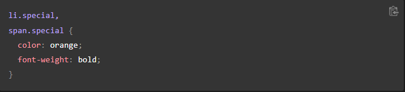
As you can imagine, some classes might be applied to many elements and you don't want to have to keep editing your CSS every time something new needs to take on that style. Therefore, it is sometimes best to bypass the element and refer to the class, unless you know that you want to create some special rules for one element alone, and perhaps want to make sure they are not applied to other things.
STYLING THINGS BASED ON THEIR LOCATION IN A DOCUMENT
There are times when you will want something to look different based on where it is in the document.
There are a number of selectors that can help you here, but for now we will look at just a couple.
In our document, there are two <em>
elements — one inside a paragraph and the other inside a list item. To select only an
<em> that is nested inside an
<li> element, you can use a
selector called the descendant combinator, which takes the form of a space between two other selectors.
Add the following rule to your stylesheet:
This selector will select any <em>
element that is inside (a descendant of) an <li>.
So in your example document, you should find that the <em>
in the third list item is now purple, but the one inside the paragraph is unchanged.
Something else you might like to try is styling a paragraph when it comes directly after a heading at the same hierarchy
level in the HTML. To do so, place a +
(an adjacent sibling combinator) between the selectors.
Try adding this rule to your stylesheet as well:
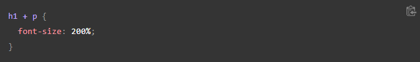The live example below includes the two rules above. Try adding a rule to make a span red if it is inside a paragraph. You will know if you have it right because the span in the first paragraph will be red, but the one in the first list item will not change color.
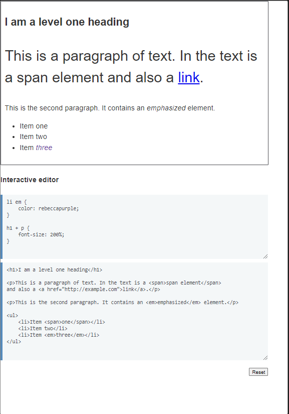Source: ☛ MDN Web Docs
STYLING THINGS BASED ON STATE
The final type of styling we shall take a look at in this tutorial is the ability to style things based on their state. A straightforward example of this is when styling links. When we style a link, we need to target the <a> (anchor) element. This has different states depending on whether it is unvisited, visited, being hovered over, focused via the keyboard, or in the process of being clicked (activated). You can use CSS to target these different states — the CSS below styles unvisited links pink and visited links green.
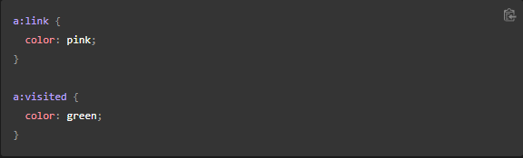You can change the way the link looks when the user hovers over it, for example by removing the underline, which is achieved by the next rule:
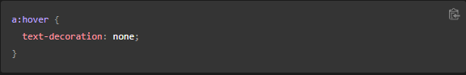Source: ☛ MDN Web Docs
In the live example below, you can play with different values for the various states of a link. I have added the rules above to it, and now realize that the pink color is quite light and hard to read — why not change that to a better color? Can you make the links bold?

We have removed the underline on our link on hover. You could remove the underline from all states of a link. It is worth remembering however that in a real site, you want to ensure that visitors know that a link is a link. Leaving the underline in place can be an important clue for people to realize that some text inside a paragraph can be clicked on — this is the behavior they are used to. As with everything in CSS, there is the potential to make the document less accessible with your changes — we will aim to highlight potential pitfalls in appropriate places.
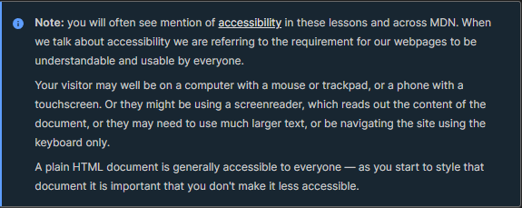COMBINING SELECTORS AND COMBINATORS
It is worth noting that you can combine multiple selectors and combinators together. For example:

You can combine multiple types together, too. Try adding the following into your code:
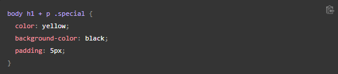This will style any element with a class of special, which is inside a <p>, which comes just after an <h1>, which is inside a <body>. Phew! In the original HTML we provided, the only element styled is <span class="special">. Don't worry if this seems complicated at the moment — you'll soon start to get the hang of it as you write more CSS.
Summary
In this article, we have taken a look at a number of ways in which you can style a
document using CSS. We will be developing this knowledge as we move through the rest
of the lessons. However, you now already know enough to style text, apply CSS based
on different ways of targeting elements in the document, and look up properties and
values in the MDN documentation.
Source: ☛ MDN Web Docs